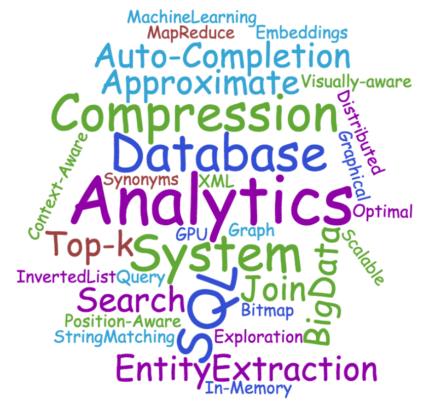
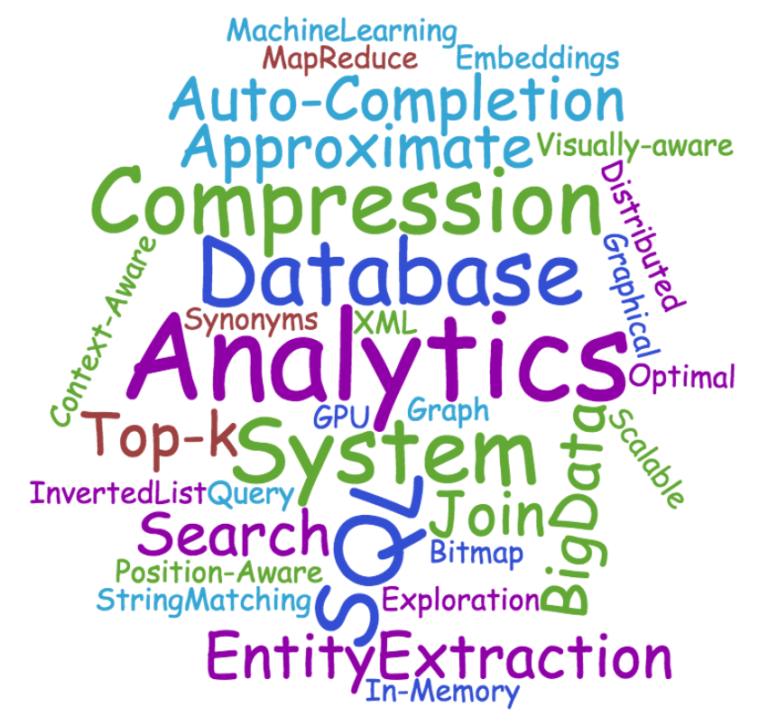

|
Chunbin Lin, Ph.D.Software Development EngineerRedshift (cloud data warehouse) Amazon Web Services, East Palo Alto Email: lichunbi@amazon.com DBLP Google Scholar |
Chunbin Lin works at Amazon Web Services (AWS) and he is working on Amazon Redshift, which is the most popular and fastest cloud data warehouse.
Before that, he worked as an intern at Amazon, Informatica, and IBM.
He received his PhD degree in computer science at the University of California, San Diego (UCSD) in 2018. He obtained his B.S. and M.S. degrees in computer science at the Renmin University of China (RUC) in 2010 and 2013, respectively.
Research Interests:
- Database systems: workload management (WLM), index building, database compression, query optimization
- Data integration: entity matching, similarity join and search
- Search engine systems: index, compression, top-k search, query optimization
- Semi-structure query processing: XML/JSON index, XML keyword search, XML twig search
- Approximate query processing: approximate IoT queries, lossy compression
Publications
Journal Articles
(* denotes corresponding author)| J3 |
Boosting Approximate Dictionary-based Entity Extraction with Synonyms Jin Wang, Chunbin Lin*, Mingda Li, Carlo Zaniolo Information Sciences, Volume 530, pages: 1-21, 2020. (Impact Factor: 5.524) Link |
| J2 |
Optimal Algorithms for Selecting Top-k Combinations of Attributes: Theory and Applications Chunbin Lin*, Jiaheng Lu, Zhewei Wei, Jianguo Wang, Xiaokui Xiao The International Journal on Very Large Data Bases (VLDB Journal), Volume 27, Issue 1, pages: 27-52, 2018 Link PDF |
| J1 |
Boosting the Quality of Approximate String Matching by Synonyms Jiaheng Lu, Chunbin Lin, Wei Wang, Chen Li, Xiaokui Xiao ACM Transactions on Database Systems (TODS), Volume 40, Issue 3, pages: 1-42, 2015 Link PDF |
Conference Papers
| C18 |
Plato: Approximate Analytics over Compressed Time Series with Tight Deterministic Error Guarantees Chunbin Lin, Etienne Boursier, Yannis Papakonstantinou Proceedings of the VLDB Endowment (PVLDB), 2020 Link PDF |
| C17 |
Fast Error-tolerant Location-aware Query Autocompletion Jin Wang, Chunbin Lin IEEE International Conference on Data Engineering (ICDE), 2020 Link PDF |
| C16 |
Deep Neural Networks based Motif Discovery with Similarity Guarantees Chuitian Rong, Ziliang Chen, Chunbin Lin International Conference on Database Systems for Advanced Applications (DASFAA), 2020 Link PDF |
| C15 |
Synergy of Database Techniques and Machine Learning Models for String Similarity Search and Join Jiaheng Lu, Chunbin Lin, Jin Wang, Chen Li Proceedings of the 28th ACM International Conference on Information and Knowledge Management (CIKM), pages: 2975-2976, 2019 Link PDF Full Version (PDF) Website |
| C14 |
MF-Join: Efficient Fuzzy String Similarity Join with Multi-level Filtering Jin Wang, Chunbin Lin, Carlo Zaniolo IEEE International Conference on Data Engineering (ICDE), 2019 Link PDF |
| C13 |
Scalable Metric Similarity Join Using MapReduce Jiacheng Wu, Yong Zhang, Jin Wang, Chunbin Lin, Yingjia Fu, Chunxiao Xing IEEE International Conference on Data Engineering (ICDE), 2019 Link |
| C12 |
An Efficient Sliding Window Approach for Approximate Entity Extraction with Synonyms Jin Wang, Chunbin Lin, Mingda Li, Carlo Zaniolo International Conference on Extending Database Technology (EDBT), 2019 Link PDF |
| C11 |
An Experimental Study of Bitmap Compression vs. Inverted List Compression Jianguo Wang, Chunbin Lin, Yannis Papakonstantinou, Steven Swanson Proceedings of ACM Conference on Management of Data (SIGMOD), pages: 993-1008, 2017 Link PDF |
| C10 |
MILC: Inverted List Compression in Memory Jianguo Wang, Chunbin Lin, Ruining He, Moojin Chae, Yannis Papakonstantinou, Steven Swanson Proceedings of the VLDB Endowment (PVLDB), Volume 10, Issue 8, pages: 853-864, 2017 Link PDF |
| C9 |
Towards heterogeneous keyword search Chunbin Lin, Jianguo Wang, Chuitian Rong Proceedings of the ACM Turing 50th Celebration Conference-China (ACM TUR-C), pages: 1-6, 2017 Link PDF |
| C8 |
Fast and Scalable Distributed Set Similarity Joins for Big Data Analytics Chuitian Rong, Chunbin Lin, Yasin Silva, Jianguo Wang, Wei Lu, Xiaoyong Du Proceedings of the International Conference on Data Engineering (ICDE), pages: 1059-1070, 2017 Link PDF |
| C7 |
Answer yes/no queries in search engines Chunbin Lin The Conference on Innovative Data Systems Research (CIDR), 2017 |
| C6 |
Fast In-Memory SQL Analytics on Typed Graphs Chunbin Lin, Benjamin Mandel, Yannis Papakonstantinou, Matthias Springer Proceedings of the VLDB Endowment (PVLDB), Volume 10, Issue 3, pages: 265-276, 2016 Link PDF Website |
| C5 |
HippogriffDB: Balancing I/O and GPU Bandwidth in Big Data Analytics Jing Li, Hung-Wei Tseng, Chunbin Lin, Yannis Papakonstantinou, Steven Swanson Proceedings of the VLDB Endowment (PVLDB), Volume 9, Issue 14, pages: 1647-1658, 2016 Link PDF |
| C4 |
Sherlock: Sparse Hierarchical Embeddings for Visually-aware One-class Collaborative Filtering Ruining He, Chunbin Lin, Jianguo Wang, Julian McAuley Proceedings of the International Joint Conference on Artificial Intelligence (IJCAI), pages: 3740-3746, 2016 Link PDF |
| C3 |
String similarity measures and joins with synonyms Jiaheng Lu, Chunbin Lin, Wei Wang, Chen Li, Haiyong Wang Proceedings of ACM Conference on Management of Data (SIGMOD), pages: 373-384, 2013 Link PDF |
| C2 |
Processing XML Twig Pattern Query with Wildcards Huayu Wu, Chunbin Lin, Tok Wang Ling, Jiaheng Lu International Conference on Database and Expert Systems Applications (DEXA), pages: 326-341, 2012 Link |
| C1 |
Optimal top-k generation of attribute combinations based on ranked lists Jiaheng Lu, Pierre Senellart, Chunbin Lin, Xiaoyong Du, Shan Wang, Xinxing Chen Proceedings of ACM Conference on Management of Data (SIGMOD), pages: 409-420, 2012 Link PDF |
Demo papers
| D5 |
GQFast: Fast Graph Exploration with Context-Aware Autocompletion Chunbin Lin, Jianguo Wang, Yannis Papakonstantinou Proceedings of the International Conference on Data Engineering (ICDE), pages 1389-1390, 2017 Link Demo Video |
| D4 |
SpiderX: Fast XML Exploration System Chunbin Lin, Jianguo Wang Proceedings of International World Wide Web Conference (WWW), pages: 237-241, 2017 Link PDF |
| D3 |
Location-sensitive Query Auto-completion Chunbin Lin, Jianguo Wang, Jiaheng Lu Proceedings of International World Wide Web Conference (WWW), pages: 819-820, 2017 Link PDF |
| D2 |
Fashionista: A Fashion-aware Graphical System for Exploring Visually Similar Items Ruining He, Chunbin Lin, Julian McAuley Proceedings of the International Conference on World Wide Web (WWW), pages 199-202, 2016 Link PDF |
| D1 |
LotusX: A Position-Aware XML Graphical Search System with Auto-Completion Chunbin Lin, Jiaheng Lu, Tok Wang Ling, Bogdan Cautis Proceedings of the International Conference on Data Engineering (ICDE), pages 1265-1268, 2012 Link PDF |
Academic Service
|
|
|